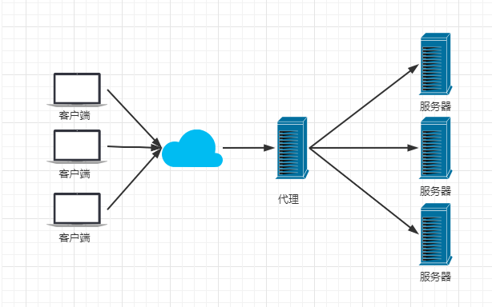
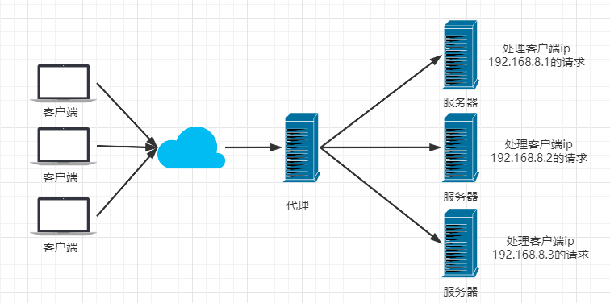

Nginx
入门
什么是Nginx?
Nginx (engine x) 是一个高性能的HTTP和反向代理web服务器，同时也提供了IMAP/POP3/SMTP服务。Nginx是由伊戈尔·赛索耶夫为俄罗斯访问量第二的Rambler.ru站点（俄文：Рамблер）开发的，第一个公开版本0.1.0发布于2004年10月4日。2011年6月1日，nginx 1.0.4发布。
其特点是占有内存少，并发能力强，事实上nginx的并发能力在同类型的网页服务器中表现较好，中国大陆使用nginx网站用户有：百度、京东、新浪、网易、腾讯、淘宝等。在全球活跃的网站中有12.18%的使用比率，大约为2220万个网站。
Nginx 是一个安装非常的简单、配置文件非常简洁（还能够支持perl语法）、Bug非常少的服务。Nginx 启动特别容易，并且几乎可以做到7*24不间断运行，即使运行数个月也不需要重新启动。你还能够不间断服务的情况下进行软件版本的升级。
Nginx代码完全用C语言从头写成。官方数据测试表明能够支持高达 50,000 个并发连接数的响应。
Nginx作用
Http代理
正向代理

反向代理

负载均衡
Nginx提供的负载均衡策略有2种：内置策略和扩展策略。内置策略为轮询，加权轮询，Ip hash。扩展策略，就天马行空，只有你想不到的没有他做不到的。
轮询

加权轮询

Ip hash
对客户端请求的ip进行hash操作，然后根据hash结果将同一个客户端ip的请求分发给同一台服务器进行处理，可以解决session不共享的问题。

动静分离
在软件开发中，有些请求是需要后台处理的，有些请求是不需要经过后台处理的（如：css、html、jpg、js等等文件），这些不需要经过后台处理的文件称为静态文件。让动态网站里的动态网页根据一定规则把不变的资源和经常变的资源区分开来，动静资源做好了拆分以后，我们就可以根据静态资源的特点将其做缓存操作。提高资源响应的速度。

配置文件
主配置文件：/…/nginx/conf/nginx.conf
通过nginx -c 可以指定要读取的配置文件来启动
nginx常见的配置文件及作用：
| 配置文件 | 作用 |
|---|---|
| nginx.conf | nginx的基本配置文件 |
| mime.types | MIME类型关联的扩展文件 |
| fastcgi.conf | 与fastcgi相关的配置文件 |
| proxy.conf | 与proxy相关的配置 |
| sites.conf | 配置nginx提供的网站，包括虚拟主机 |
nginx.conf配置文件详解
nginx.conf的内容分为以下几段：
- main配置段：全局配置段。其中main配置段中可能包含event配置段；
- event{}：定义event模型工作特性；
- http{}：定义http协议相关配置。
配置指令：（注:以分号结尾）
格式如下：
derective value1 [value2 … …];
支持使用变量：
内置变量：模块会提供内置变量
自定义变量：如下
set var_name value
用于调试、定位问题的配置参数
daemon {on|off}; //是否已守护进程运行进程nginx，调试时应设置为off
master_process {on|off}; //是否以master/worker模型来运行nginx，调试时可以设置为off
error_log 位置1 级别2; //配置错误日志（位置与级别有以下选项，点击脚注）
正常运行必备的配置参数
user USERNSME {GROUPNAME}; //指定运行worker进程的用户和组；
pid /path/to/pid_file; //指定nginx守护进程的pid文件
worker_rlimit_nofile NUMBER; //设置所有worker进程最大可以打开的文件数，默认为1024；
worker_rlimit_core SIZE; //指明所有worker进程所能够使用的总体的最大核心文件大小，保持默认即可
优化性能的配置参数
worker_processse N; //启动N个worker进程，这里的N为了避免上下文切换，通常设置为cpu总核数-1或等于总t核数
worker_cpu_affinity CPUMASK3 [CPUMASK…]; //将进程绑定到某个CPU中，避免频繁刷新缓存
time_resolution INTERVAL; //计时器解析度。降低此值，可减少gettimeofday()系统调用的次数
worker_priority NUMBER; //指明worker进程的NICE值（优先级）
事件相关配置
注：event{}段中的配置参数
use epoll; //多路复用I/O中的一种方式，仅用于linux2.6以上内核，大大提升nginx性能
accept_mutex {on|off}; //master调度用户请求至各worker进程时使用的负载均衡锁，“on”表示能让多个worker轮流地、序列化地去响应新请求
lock_file FILE; //accept_nutex用到的互斥锁锁文件路径
use [epoll | rtsig | select | poll]; //指明使用的事件模型，建议让nginx自行选择
worker_connections #; //每个进程能够接受的最大连接数
multi_accept on; //尽可能多的接受请求
Fastcgi相关配置参数
- LNMP：php要启用fpm模型
- 配置示例如下：
location ~ \.php$ {
root html;
fastcgi_pass 127.0.0.1:9000; //定义反向代理
fastcgi_index index.php;
fastcgi_param SCRIPT_FILENAME /scripts$fastcgi_script_name;
include fastcgi_params;
}
注：当LNMP架构分台部署，“/scripts”需换成php的目录
常需要调整的参数
worker_processes NUMBER //启动NUMBER个worker进程
worker_cpu_affinity CPUMASK3 //绑定CPU核心数
worker_connections NUMBER //绑定的CPU核心每个最大连接数
worker_priorty NUMBER //调整nice值
nginx作为web服务器时使用的配置
注：http{}段配置的参数
http{}段：由ngx_http_core_module模块引入
http配置主要包含四个区块，结构如下：
http { ## 协议级别 include mime.types; default_type application/octet-stream; keepalive_timeout 65; gzip on; sendfile on; ##指定nginx是否调用sendfile函数（zero copy）来输出文件，对于普通应用必须设为on； ##如果用来进行下载等应用磁盘I/O重负载应用，可设置为OFF，以平衡磁盘与网络I/O处理速度，降低系统的uptime autoindex on; ##开启目录列表访问，适合下载服务器，默认关闭 upstream { ##负载均衡配置 ... } server { ##服务器级别，每一个server类似于httpd中的一个<VirtualHost,通俗来说就是一个网站> listen80; server_name localhost; location / { ##请求级别，类似与httpd中的<Location>，用于定义URL与本地文件系统的映射关系 root html; index index.html index.htm; } } }http{}段配置指令：
1）server{}：定义一个虚拟主机，示例如下：server { listen 80; server_name www.idfsoft.com; root "/vhosts/web"; } 注： listen指定监听的地址和端口写法： listen ADDRESS[:PORT]; listen PORT; server_name NAME1 [NAME2...]; ##后面可以跟多个主机，名称可以用正则表达式或通配符 当有多个server时，匹配顺序如下： 1.先做精确匹配检查； 2.左侧通配符匹配检查，如*.idfsoft.com 3.右侧通配符匹配检查，如mail.* 4.正则表达式匹配检查，如~ ^.*\.idfsoft\.com$ 5.default_server
2）location区段，通过指定模式来与客户端请求的URI相匹配
功能：允许根据用户请求的URI来匹配定义的各location，匹配到时，此请求将被响应的location配置快中的配置所处理，例如做访问控制等功能
语法：如下
location [修饰符] pattern {…}常用的修饰符说明：
| 修饰符 | 功能 |
|---|---|
| = | 精确匹配 |
| ~ | 正则表达式模式匹配，区分大小写 |
| ~* | 正则表达式模式匹配，不区分大小写 |
| ^~ | 前缀匹配，类似于无修饰符的行为，也是以指定模块开始，不同的是，如果模式匹配，那么就停止搜索其他模式了，不支持正则表达式 |
| @ | 定义命名location区段，这些区段客户端不能访问，只可以有内部产生的请求访问，如try_files或error_page等 |
没有修饰符表示必须以指定模式开始，如：
server { server_name www.baibai.com; location /abc { ...... } }那么如下内容可以就可以正确匹配：
- www.baibai.com/abc
- www.baibai.com/abc/
- www.baibai.com/abc?…
=：表示必须与指定的模式精确匹配，如：
server { server_name www.baibai.com; location = /abc { ...... } }那么如下内容可正确匹配：
- www.baibai.com/abc
- www.baibai.com/abc?.…
如下内容则无法匹配：
- www.baibai.com/abc/
- www.baibai.com/abc/adcde
~：表示指定的正则表达式要区分大小写，如：
server { server_name www.baibai.com; location ~ ^/abc$ { ...... } }那么如下内容可以正确匹配：
- www.baibai.com/abc
- www.baibai.com/abc?.…
如下内容则无法匹配：
- www.baibai.com/abc/
- www.baibai.com/ABC
- www.baibai.com/abcde
~*：表示指定的正则表达式不区分大小写，如：
server { server_name www.baibai.com; location ~* ^/abc$ { ...... } }那么如下内容就可以正确匹配：
- www.baibai.com/abc
- www.baibai.com/abc?.…
- www.baibai.com/ABC
如下内容则无法匹配：
- www.baibai.com/abc/
- www.baibai.com/abcde
查找顺序和优先级，由高到底依次为：
- 带有“=”的精确匹配优先
- 正则表达式
- 没有修饰符的精确匹配
注：有多个正则表达式出现时，按照它们在配置文件中定义的顺序
访问控制
注：用于location段，可以用主机地址表示，也可用网段表示，必须一起用
allow：设定允许那台或那些主机访问，多个参数间用空格隔开deny：设定禁止那台或那些主机访问，多个参数间用空格隔开
例如：
location / {
root html;
index index.php index.html index.htm;
allow 192.168.91.129/32;
deny all;
}
开启状态界面
stub_status {on|off};
配置如下：
location /status { ##URI不唯一 stub_status on； allow 192.168.91.129/32; ##允许查看的地址 deny all; }访问状态页面方式：http://服务器IP/status
状态页面信息详解，如下表：
| 状态码 | 表示的意义 |
|---|---|
| Active connections 2 | 当前所有处于打开状态的连接数 |
| accepts | 总共处理了多少个连接 |
| handled | 成功创建多少握手 |
| requests | 总共处理了多少个请求 |
| Reading | nginx读取到客户端的Header信息数，表示正处于接受请求状态的连接数 |
| Writing | nginx返回给客户端的Header信息数，表示请求已经接受完成，且正处于处理请求或者发送响应的过程中的连接数 |
| Waiting | 开启keep-alive的情况下，这个值等于active-(reading + weiting)，意思就是nginx已处理完承载等候下一次请求指令的驻留连接 |
反向代理与负载均衡
nginx通常被用作后端服务器的反向代理，这样就可以很方便的实现动静分离以及负载均衡，从而大大提高服务器的处理能力。
nginx实现动静分离，其实就是在反向代理的时候，如果是静态资源，就直接从nginx发布的路径去读取，而不是需要从后台服务器获取；但是要注意，这种情况下需要保证后端跟前端的程序保持一致，可以使用Rsync+inotify做服务端自动同步或者使用NFS、MFS分布式共享存储。
Http Proxy模块，功能很多，最常用的是proxy_pass和proxy_cache；若要使用proxy_cache，需要集成第三方的ngx_cache_purge模块，用来清楚指定的URL缓存。这个集成需要在安装nginx的时候去做，如：
./configure —add-module=…/ngx_cache_purge…
nginx通过upstream模块来实现简单的负载均衡，upstream需要定义在http段内，访问静态资源在location \ {}段中；访问动态资源在location ~ /(.*.php) {} 中或者其他定义动态location中，如：
http { upstream NAME { ##NAME，集群名字，必须与location中的NAME保持一致 server 192.168.91.129:80; server 192.168.91.130:80; } server { listen 80; server_name www.baibai.com; location / { ##动态资源访问location ~ /(.*\.php) { 段中 root html; index index.html index.htm; proxy_pass http://NAME; ##与upstream中保持一致 } } }在upstream段内，定义一个服务器列表，默认的方式是轮询，如果要确定同一个访问者发出的请求总是由同一个后端服务器来处理，可以设置ip_hash，如：
upstream NAME { ip_hash; server 192.168.91.129:80 weight=5; server 192.168.91.130:80 weight=5; } 注：upstream用于http{}段 注：设置weight的值会将服务器的处理量增加，表示192.168.91.129被访问5次将后再将其他访问请求交给192.168.91.130注意：这个方法本质还是轮询，而且由于客户端的IP地址可能是不断变化的，比如动态IP，翻墙等，因此ip_hash并不能完全保证同一个客户端总是由同一个服务器来处理。
转载请注明来源，欢迎对文章中的引用来源进行考证，欢迎指出任何有错误或不够清晰的表达。可以在下面评论区评论，也可以邮件至 1589631311@qq.com